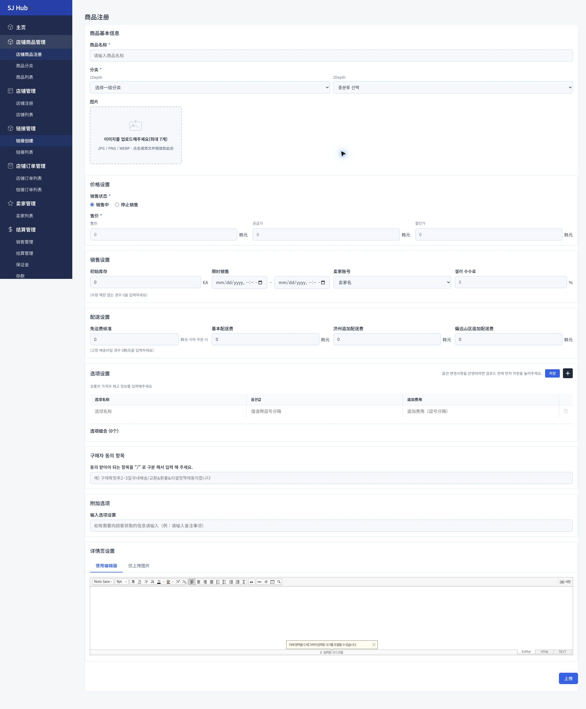
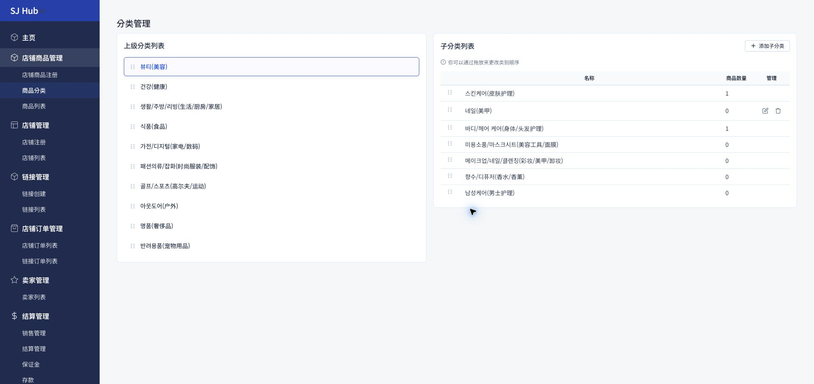
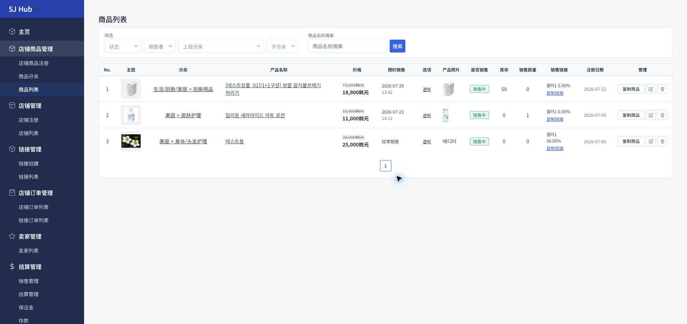

이 화면에서 만드는 상품은 카테고리·이미지·재고·배송비·셀러 수수료까지 전부 갖춘 "정식 상품"입니다. 이름과 가격만으로 결제 링크 하나만 급하게 만들고 싶다면 이 화면이 아니라 링크관리를 이용하세요.

1
2
3
4
실제 관리자 화면입니다. 스크롤이 긴 화면이라 주요 입력 영역만 표시했습니다.
사용 방법
1
상품명 · 분류 지정
1Depth(상위분류)를 고르면 2Depth(하위분류)가 나타납니다. 분류는 고객이 상점에서 상품을 찾을 때 기준이 되므로, 실제 상품 성격과 맞는 분류를 골라야 합니다.
2
이미지 최대 7장 업로드
상품 이미지는 최대 7장까지 등록할 수 있습니다. 링크관리에는 이미지 등록 기능 자체가 없으니, 이미지가 필요한 상품은 반드시 이 화면에서 등록해야 합니다.
3
공급가 · 판매가 · 할인가의 차이 정확히 이해하기
공급가는 물건을 판매하기 위해 구매해오는 실제 원가입니다(마진 계산용, 판매 페이지에는 노출되지 않습니다). 판매가는 실제 상품 판매 페이지에 노출되는 판매 가격입니다. 할인가를 지정하면, 판매가 대비 할인율(%)과 함께 이 할인가가 최종 판매 가격으로 고객에게 노출됩니다. 세 값을 혼동하면 마진 계산이나 실제 고객 노출가가 틀어질 수 있으니 주의하세요.
4
초기 재고 · 기간 한정 · 옵션 설정
초기 재고와, 필요하면 기간 한정(타임세일)을 설정합니다. 색상·사이즈 등 옵션이 있는 상품은 옵션값과 추가비용도 이 화면에서 함께 등록합니다.
5
셀러 계정 지정은 필수 — 결제 모듈 노출 조건
셀러 계정은 선택이 아니라 필수 항목입니다. 실제 결제 모듈이 화면에 노출되려면 셀러 계정이 지정되어 있어야 하므로, 비워두면 고객이 결제 자체를 진행할 수 없습니다. 셀러 수수료(%)도 이 화면에서 상품마다 개별 지정하며, 셀러 관리 화면과는 무관합니다 — 같은 셀러라도 상품마다 수수료가 다를 수 있으니, 정산 내역이 예상과 다르면 먼저 이 값을 확인하세요.
💡 배송비(기본/제주추가/도서산간추가)도 이 화면에서 상품별로 설정합니다. 무료배송 기준 금액을 0으로 두면 모든 주문에 배송비가 부과됩니다.
1
상위·하위 분류 관리하기
10개의 상위 분류 아래에 하위 분류를 자유롭게 추가·삭제하고, 드래그로 순서를 바꿀 수 있습니다.

1
2
실제 관리자 화면입니다.
사용 방법
1
상위 분류 선택
왼쪽 목록에서 상위 분류를 클릭하면 오른쪽에 그 하위 분류들이 나타납니다.
2
하위 분류 추가 · 순서 변경
"添加子分类"로 하위 분류를 새로 만들고, 드래그로 순서를 바꿀 수 있습니다. 이 순서는 상품 등록 화면의 분류 선택 목록 순서에도 그대로 반영됩니다.
💡 상위 분류 10개(뷰티·건강·생활/주방/리빙·식품·가전/디지털·패션의류/잡화·골프/스포츠·아웃도어·명품·반려용품) 자체는 추가·삭제할 수 없고, 하위 분류만 자유롭게 관리합니다.
1
등록된 상품 조회하기
판매중·판매종료 상품을 조건별로 조회하고, 개별 상품의 판매 링크 복사·복제·수정·삭제를 처리합니다.

1
2
3
실제 관리자 화면입니다.
사용 방법
1
필터로 좁혀보기
상태·판매자(셀러)·상위분류·하위분류·상품명으로 원하는 상품만 걸러봅니다.
2
재고 · 판매수량 확인
재고가 0에 가까운 상품은 품절 전에 미리 보충하세요. 판매수량으로 인기 상품을 파악할 수 있습니다.
3
"판매링크 복사"는 링크관리와 다른 기능
여기서 복사되는 링크는 이미 정식 등록된 이 상품의 상세페이지 주소입니다. 상점 진열 없이 새로운 결제 링크를 만드는 링크관리와는 별개의 기능이니 헷갈리지 마세요.